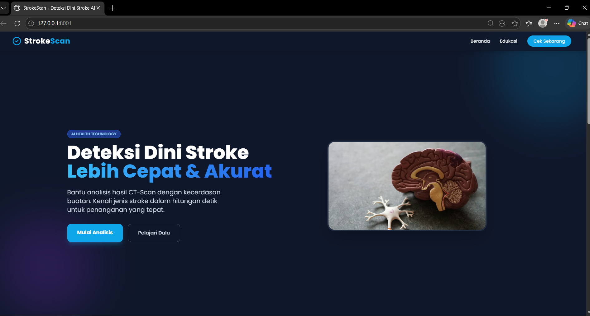
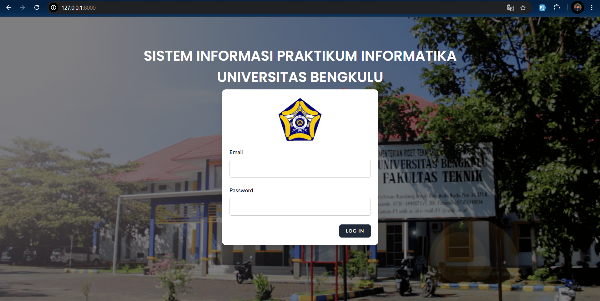
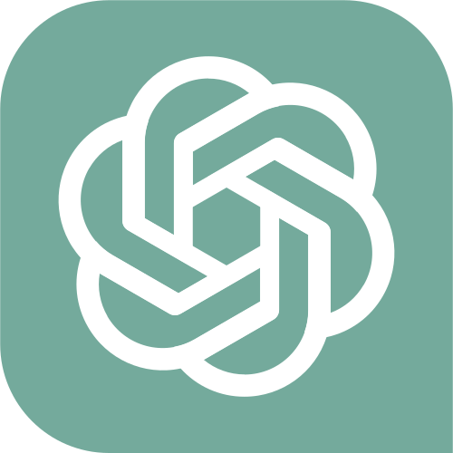

Semua Project
Beberapa project mengenai riset AI, model machine learning, pemrosesan citra medis, hingga implementasi full-stack deployment.

Stroke Detection Based Tow Stage Model
Two-Stage Stroke Classification and Detection System
Sistem klasifikasi stroke otomatis berbasis citra CT Scan menggunakan deteksi objek YOLOv11 dan analisis tekstur Radiomics.

Sistem Informasi
SILAB-Sistem Informasi Lab Informatika
Aplikasi web untuk membantu proses pembelajaran di Lab Informatika.

Deteksi Jerawat
ACNIVERS
Implementasi AI dan FastAPI backend untuk serving model Deep Learning YOLOv8 dalam deteksi jerawat.

UI/UX Design
Bengkulens App
Perancangan mobile app Bengkulens untuk rekomendasi tempat wisata Provinsi Bengkulu

NLP
Analisis Sentiment Chat GPT
Analisis ini untuk menganalisis sentimet dari masyarakat terhadap aplikasi AI Chat-GPT.

SQL Project
SQL
Membuat ERD dan basis data pada sistem manajemen gaji